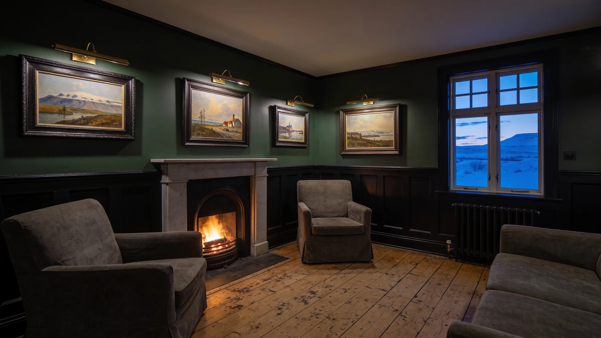
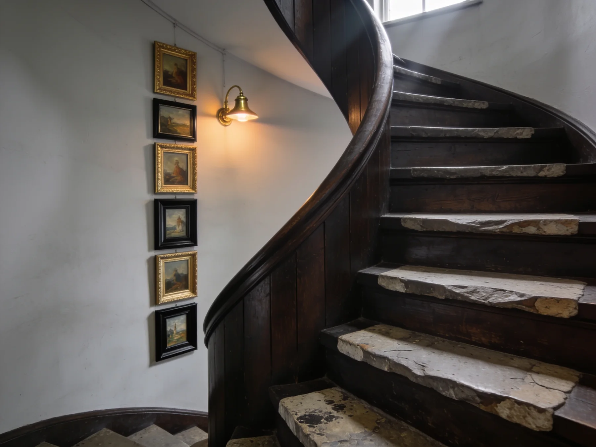
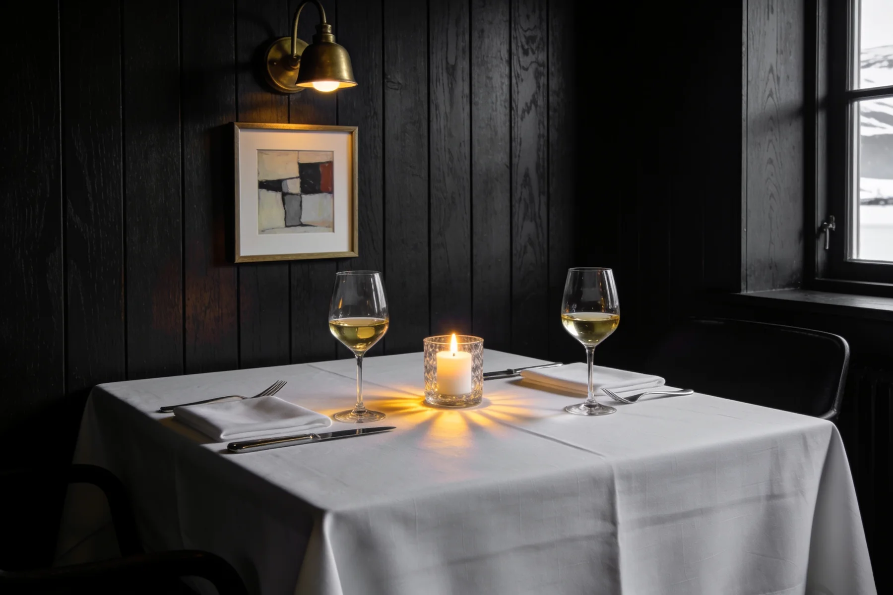
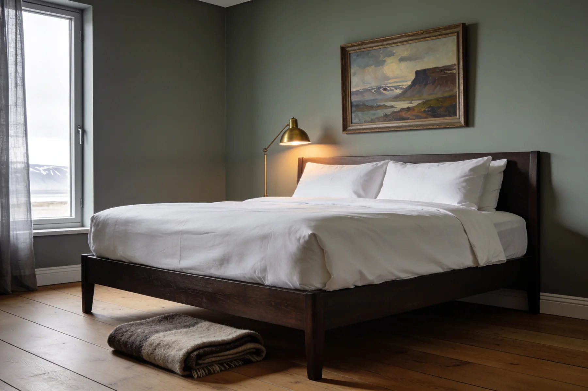

Norðurstofa
54.000 krTvíbreitt rúm, útsýni á fjörðinn, verk eftir Kjarval á veggnum · 42 m²

Sextán herbergi
Gamalt timburhús við fjörðinn, fullt af íslenskri málaralist, tuttugu mínútum frá Hólmavík.

Húsið
Húsið var reist 1911 og stóð autt í ellefu ár. Verkin komu með okkur: safn sem afi minn byrjaði á og við höfum bætt við síðan. Þau hanga í stofunum, í ganginum og upp allan stigann, og ekkert þeirra er til sölu.
Sextán herbergi, enginn lyfta, engin ráðstefnuaðstaða. Það var aldrei ætlunin.

Kvöldið
Fjórir réttir, breytilegir eftir því hvað kemur að landi og hvað er til í garðinum. Við spyrjum um ofnæmi þegar þú bókar og segjum þér hvað er á seðlinum þann daginn.
Herbergin
Tvíbreitt rúm, útsýni á fjörðinn, verk eftir Kjarval á veggnum · 42 m²
Sérstofa með arni og skrifborði við gluggann · 38 m²
Undir súð, tvö gluggahvolf, kyrrasta herbergið í húsinu · 28 m²

Vitið
Ekki fleiri. Húsið var byggt sem heimili og við breyttum því ekki í hótel.
Áttatíu og fjögur málverk hanga í stofunum og göngunum, öll eftir íslenska málara.
Kvöldverður er borinn fram til hálf ellefu, og barinn stendur opinn á meðan einhver situr.
Verið velkomin
Bókað hjá okkur, ekki hjá millilið. Þú greiðir við komu og afbókar frítt fram að hádegi daginn áður.